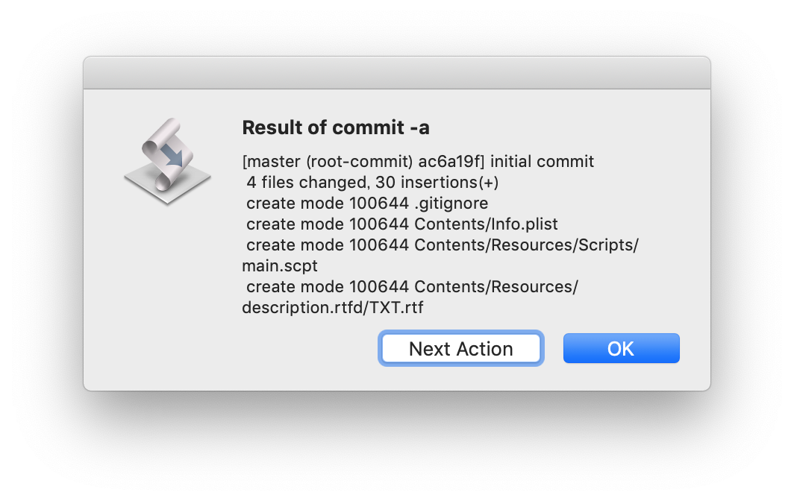

最初のコミット
レポジトリの作成が終わると、次のようにコマンドメニューが表示されます。
ここで、"commit -a" を実行すると、コミットメッセージを入力するダイアログが表示されます。

"OK" を押すと、コミットが行われます。次のようなダイアログが表示されたら、コミット成功です。
Pressing the "OK" button cause to perform commits. If the commit is succeeded, following dialog will be shown.

"OK" ボタンで、git-scptd は終了します。"Next Action" を押すと、もう一度コマンドメニューが表示され、引き続き別のコマンドの実行を行えます。
区切り線"-----"以前のコマンドはほぼ、
git <command>
という形で実行されます。export は、
The "export" command cause making a copy of the files in the woking tree with performing the following git command.
git checkout-index -a -f
によって、working tree あるファイルのコピーを作成します。Subversion や CVS の export に相当します。保存場所は、ファイル保存ダイアログによって指定することができます。
The destination of the copy will be asked by the file save dialog.